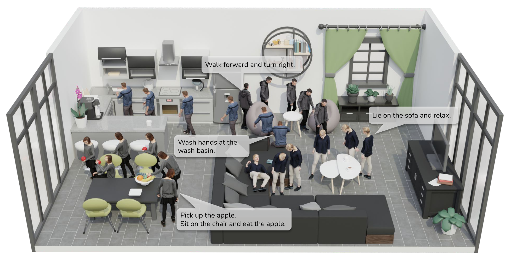

|
Zimo He | 何子默 Welcome to my page! I'm a 4th-year undergraduate student majoring in Artificial Intelligence at Peking University. I'm also an incoming Ph.D. student at PKU School of Computer Science, advised by Prof. Yixin Zhu and Prof. Yizhou Wang. Besides, I'm a member of Tong Class in Yuanpei College. |
{kind=link}
ResearchMy research interests lie in 3D vision and computer graphics, including human-scene interaction, character animation and human motion synthesis. My long-term goal is to build a general embodied AI that can see, understand and interact with environments, both in virtual and real world. |
|

|
Autonomous Character-Scene Interaction Synthesis from Text Instruction
Nan Jiang*, Zimo He*, Zi Wang, Hongjie Li, Yixin Chen, Siyuan Huang†, Yixin Zhu† SIGGRAPH Asia, 2024 project page / arXiv We propose a framework synthesizing multi-stage scene-aware human motions autonomously and directly from the text instruction and goal location. We also introduce LINGO, a comprehensive language-annotated MoCap dataset, featuring Human-Scene Interaction (HSI) motions. |
Experience |
 |
Beijing Institute for General Artificial Intelligence (BIGAI), China
Apr. 2024 - Present Research Assistant Advisor: Dr. Siyuan Huang |
 |
Cognitive Reasoning (CoRe) Lab, Institute for Artificial Intelligence, Peking University, China
Jul. 2023 - Present Research Assistant Advisor: Prof. Yixin Zhu |
|
Peking University, China
Aug. 2021 - Present Undergraduate Student |
|
This website is a modification to Jon Barron's website. |